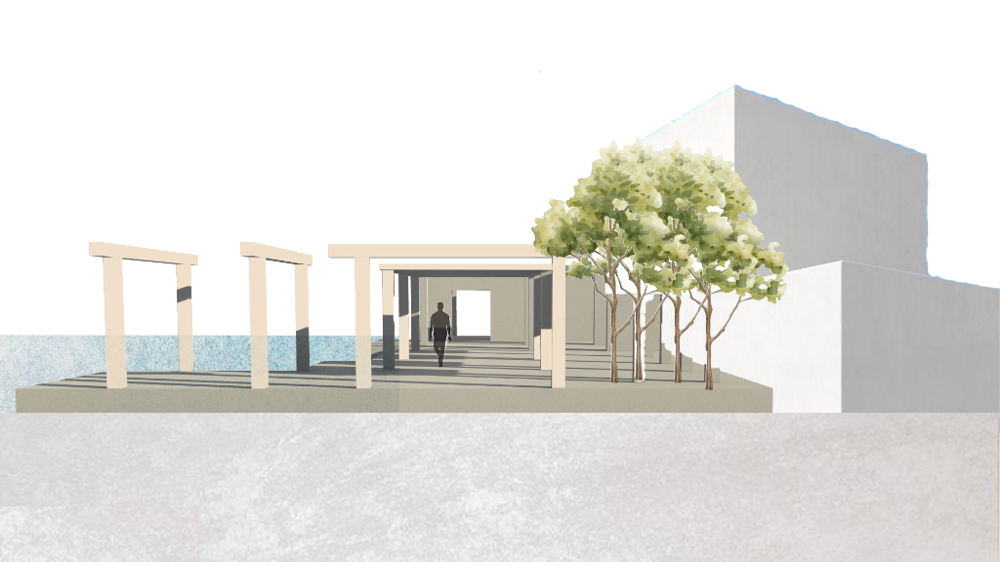

Sector Plaza
Type Academic (ARCH 400)
Professor Filler

Sector Plaza is an academic project designed under Professor Filler, exploring structural elements, outdoor plaza environments, and spatial hierarchy.

Sector Plaza is an academic project designed under Professor Filler, exploring structural elements, outdoor plaza environments, and spatial hierarchy.